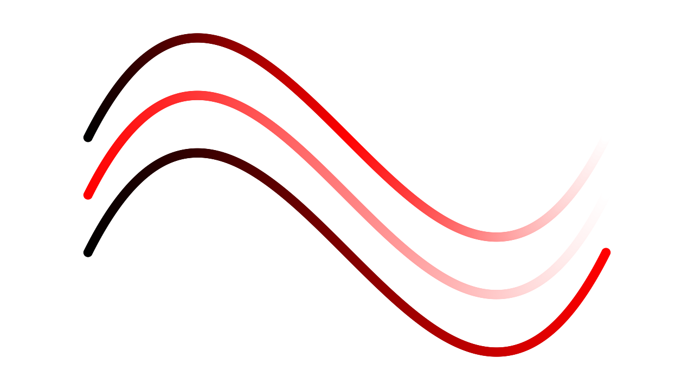
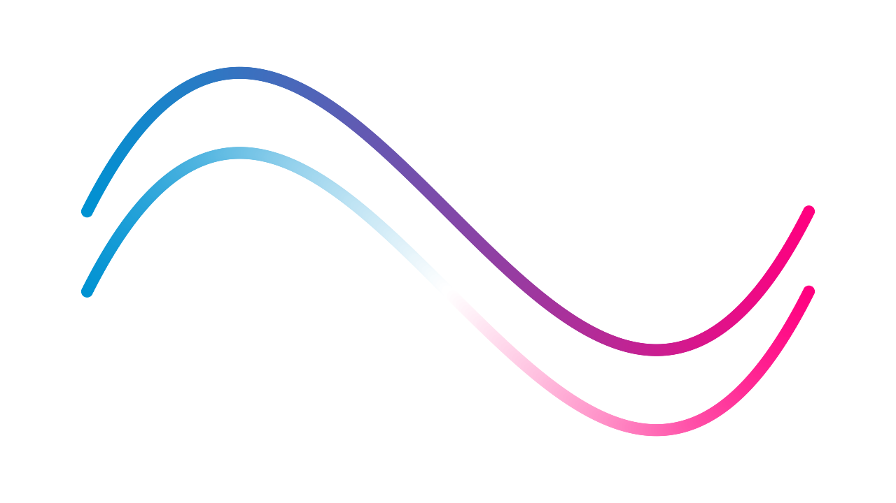

Colors and Color Maps
In COMPAS colors are defined in RGB color space, with components in the range of 0-1.
The RGB Color Circle
The color class (compas.colors.Color) provides constructor methods
for the primary, secondary, and tertiary colors of the RGB color wheel or color circle.
Primary
>>> Color.red()
Color(1.0, 0.0, 0.0, 1.0)
>>> Color.green()
Color(0.0, 1.0, 0.0, 1.0)
>>> Color.blue()
Color(0.0, 0.0, 1.0, 1.0)
Secondary
>>> Color.yellow()
Color(1.0, 1.0, 0.0, 1.0)
>>> Color.cyan()
Color(0.0, 1.0, 1.0, 1.0)
>>> Color.magenta()
Color(1.0, 0.0, 1.0, 1.0)
Tertiary
>>> Color.orange()
Color(1.0, 0.5, 0.0, 1.0)
>>> Color.lime()
Color(0.5, 1.0, 0.0, 1.0)
>>> Color.mint()
Color(0.0, 1.0, 0.5, 1.0)
>>> Color.azure()
Color(0.0, 0.5, 1.0, 1.0)
>>> Color.violet()
Color(0.5, 0.0, 1.0, 1.0)
>>> Color.pink()
Color(1.0, 0.0, 0.5, 1.0)
Colors of the RGB color circle.
Lighter and Darker Colors
The color class (compas.colors.Color) provides methods to generate lighter and darker variations of a given color.
The methods can be used to modify the colors in-place (compas.colors.Color.lighten() and compas.colors.Color.darken()),
or to generate new colors (compas.colors.Color.lightened() and compas.colors.Color.darkened()).
>>> red = Color.red()
>>> red.lighten(50)
None
>>> red.darken(50)
None
>>> red
Color(1.0, 0.0, 0.0, 1.0)
>>> red = Color.red()
>>> red.lightened(50)
Color(1.0, 0.5, 0.5, 1.0)
>>> red.darkened(50)
Color(0.5, 0.0, 0.0, 1.0)

Lighter and darker colors of the color wheel.
Saturation
Similar to generating lighter and darker colors, the color class provides methods for saturating or desaturating colors
(compas.colors.Color.saturate() and compas.colors.Color.desaturate(), and compas.colors.Color.saturated() and compas.colors.Color.desaturated()).

Lighter and darker colors of the color wheel.
Color Maps
Using compas.colors.ColorMap, color maps can be constructed from various color inputs.
Maps based on named scientific color palettes designed by Fabio Crameri (https://www.fabiocrameri.ch/colourmaps/) and some of the matplotlib color palettes are also available.
To quickly plot a color palette for visual inspection use plot method of the color map class compas.colors.ColorMap.plot().
For example, the “viridis” map from matplotlib.

Examples
Using the following template we can compare various color maps.
>>> from compas.colors import Color, ColorMap
>>> from compas.geometry import Point, Bezier
>>> from compas_plotters.plotter import Plotter
>>> points = [Point(0, 0, 0), Point(3, 6, 0), Point(6, -6, 6), Point(9, 0, 0)]
>>> curve = Bezier(points)
>>> cmap = ...
>>> plotter = Plotter(figsize=(16, 9))
>>> n = 500
>>> for i, point in enumerate(curve.locus(n)):
... color = cmap(i, 0, n - 1)
... plotter.add(point, facecolor=color, edgecolor=color, edgewidth=0.5, size=10)
...
>>> plotter.zoom_extents()
>>> plotter.show()
From RGB
>>> cmap = ColorMap.from_rgb()

From One Color
>>> cmap = ColorMap.from_color(Color.red())
>>> cmap = ColorMap.from_color(Color.red(), rangetype='light')
>>> cmap = ColorMap.from_color(Color.red(), rangetype='dark')

From Two Colors
>>> cmap = ColorMap.from_two_colors(Color.from_hex('#0092D2'), Color.pink())
>>> cmap = ColorMap.from_two_colors(Color.from_hex('#0092D2'), Color.pink(), diverging=True)

From Three Colors
>>> cmap = ColorMap.from_three_colors(Color.red(), Color.green(), Color.blue())